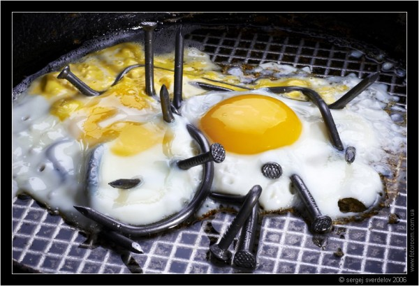

Допустим человеку нужно, чтобы у него дома висел портрет этого человека над письменным столом.
Он спрашивает знакомых, что для этого нужно. Знакомые знакомых говорят, что что-то слышали про перфоратор, отвертку, гвоздь, молоток. Что-то добавляют еще про стандарты размещения портретов, кидают ссылки на сайты с разными санитарными нормами, рекомендуют своих знакомых, которые вроде как весили портреты.
Человек изучает тему, много думает. Останавливается на варианте гвоздь и молоток. Молоток уже есть (знакомые продали по знакомству). Человек идет в магазин гвоздей. Смотрит на гвозди, трогает их, представляет как гвоздь будет выглядеть в стене. Он спорит с вешателями портретов о красоте гвоздя. Портрет отходит на второй план. В итоге находятся люди готовые вбить гвоздь именно так как скажет наш герой. Портрет висит в туалете. Ведь именно там на гвоздь падал хорошо свет, и только там перегородка была кирпичная, а не бетонная.

Похожие ситуация в жизни то ли к счастью, то ли к сожалению нередки. К сожалению, потому, что всегда жалко людей, которые понимают, что они заблуждались, а к счастью, потому, что работа с заблуждениями хотя и невероятно сложна, но интересна, а порой и хорошо оплачиваема.
Сегодня мне позвонил мужчина, которому обязательно нужно было купить ссылки. На мой вопрос зачем? он ответил, что ему рассказали, что так на его сайте (поставка запчастей для тракторов) будет много посетителей, он станет популярным и он сможет там продавать рекламу. Я зашел на сайт. Сразу стало видно, что и сайт ему сделали на похожей волне. Шрифт Impact, громадные картинки ломающие вёрстку.
Вместо того, чтобы решить стоит ли размещать портрет на облезлой стене, человек одержим идеей гвоздя. Он уверен, что именно гвоздь сделает его сайт самым популярным. Мне знакомы люди, считающие, что тратить время на заказчиков «не в теме» себе дороже. Еще больше людей переживают, когда заказчик считает себя умнее исполнителя.
Я не стал отказываться от общения. Я встречусь с ним в понедельник и мы поговорим о фотографии вообще.